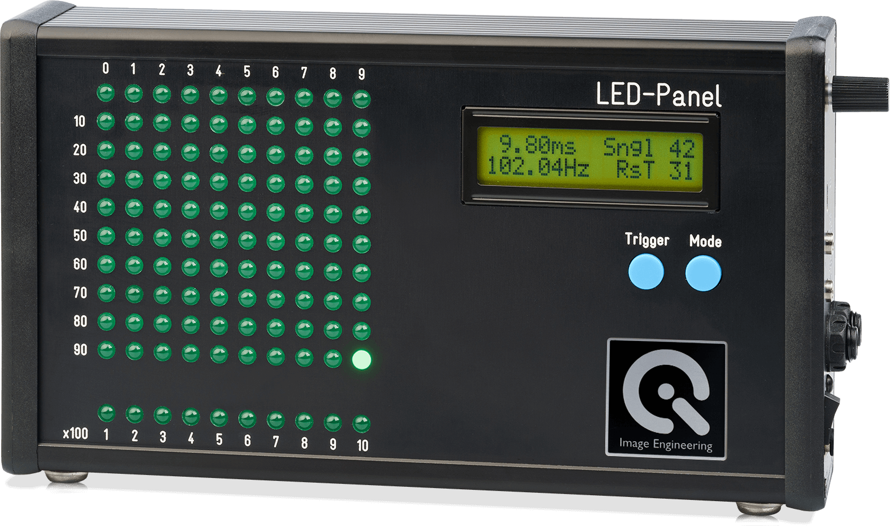
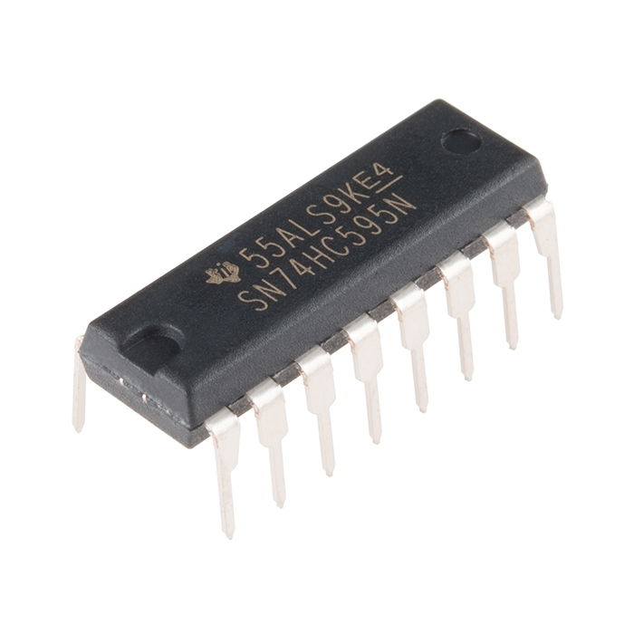
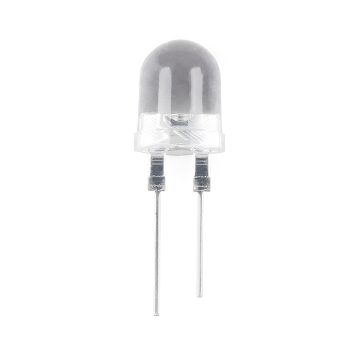
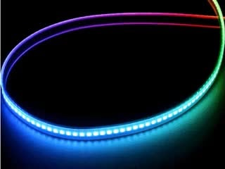
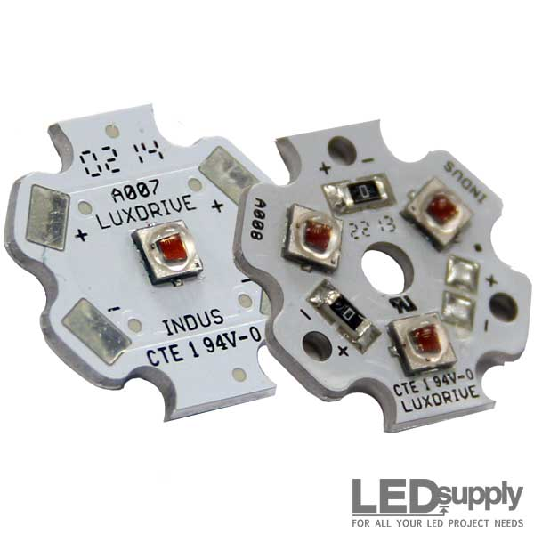

Reader’s map: build guide first (wire the first light-up, just below) · then §1 what this tool is for · §2 the order list · §3 the driver choice + exact parts · §4–§9 the design rationale.
Got the parts? Start here. This is the hands-on build; the numbered sections below (§1 onward) explain what the panel is for and why each part was chosen.
Bring-up = power on the smallest version of the circuit and get it working in verified steps, before scaling to the full panel. Here that is just the Pico + one 74HC595 + eight LEDs, powered at 3.3 V from the Pico (no ULN2803, no external supply): the Pico’s 3.3 V logic drives a 3.3 V-powered 595 directly, so no level shifter is needed. Green LEDs through 240 Ω at 3.3 V draw ~5 mA — a little dim, but plenty to confirm the chain works.
No display panel needed yet. For this first light-up the LEDs plug straight into the breadboard (as drawn). You only need the separate display panel later, for the actual multi-camera filming — there the LEDs must spread out at 3–5 cm pitch so every camera can resolve them, and 10 mm domes are too wide to pack on a breadboard. The panel board is in §2.
Connect it in this order (USB unplugged while wiring). The MB-104’s rails come in + / – pairs (red + on top, blue – below), and the middle of the board carries two pairs back-to-back — block-1’s bottom rails and block-2’s top rails. We build in the top block: its + pins go to the top + rail, its – pins to the – line in the middle — one jumper each, no rail-to-rail ties.
| # | From | To | Why |
|---|---|---|---|
| 1 | Pico 3V3 (pin 36) | the top + rail | 3.3 V power for the whole board |
| 2 | Pico GND (pin 23) | a – line in the middle | common ground — one jumper, no rail-to-rail tie |
| 3 | 595 VCC (16) and MR (10) | top + rail | power the chip; MR high = never reset |
| 4 | 595 GND (8) and OE (13) | – line (middle) | ground the chip; OE low = outputs always on |
| 5 | Pico GP19 (pin 25) | 595 SER (14) | serial data in |
| 6 | Pico GP18 (pin 24) | 595 SRCLK (11) | shift clock |
| 7 | Pico GP17 (pin 22) | 595 RCLK (12) | latch — copies the shifted byte to all outputs at once |
| 8 | each output QA–QH (15, 1–7) | 240 Ω → LED + → LED − → – rail | one resistor + LED per output, into the board’s spare columns; mind polarity (long leg = +) |
Finding the Pico’s pins. The Pico H has its headers pre-soldered, so it drops straight into the breadboard straddling the centre channel (USB hanging off one end). All five pins we use are along one long edge: 3V3 (pin 36) up near the USB, then a GND with GP17 / GP18 / GP19 (pins 22–25) grouped together toward the far end. Count pins from the USB end, or read the labels printed beside each pin, to find them.
First test: plug in USB and run firmware that shifts out 0b10101010 then pulses RCLK — four alternating LEDs should light. If they do, the data→shift→latch→LED chain works, and you can scale up: chain more 595s off QH’ (9), and add the ULN2803 buffer for full brightness. GP18/GP19 are the Pico’s hardware SPI0 pins (SCK/TX), so the firmware can drive them with the SPI peripheral; GP17 is a spare GPIO toggled by hand as the latch.
Build a large, flat LED panel that shows a fast-advancing, visually-decodable time code. All 11 cameras film it at once; each frame decodes to a timestamp; the spread of timestamps across cameras is the inter-camera offset. One clock, many readers.
The Image Engineering / Imatest LED-Panel (ISO 15781) is the calibrated reference we clone. But it is a 240×130×55 mm, 1 kg benchtop unit with a 50–100° viewing cone, built to be filmed by one camera at a time, and it costs $3,980–$57,850. It cannot face an 11-camera ring. We keep its principle and rebuild it large, flat, and multi-camera-friendly.

How it encodes time: in the timing modes a single lit LED sweeps across the grid one position per step, and the ×100 bottom row counts each wrap, giving a spatial base-100 counter (range up to 1000 steps). The lit position decodes to elapsed = count × step.
The whole rig on one screen: the build diagram, and the bill of materials as its colour-coded legend with buy links. The design rationale is in §4–§9 below.
Reading the diagram: the breadboard carries only the microcontroller, the static-latch shift register(s) and the current-limit resistors; the 10 mm LEDs are too wide to pack on it (~4 holes each), so they mount on the display panel at 3–5 cm pitch and connect back by jumper wires. The signal path runs 5 V supply → microcontroller → shift register(s) → LEDs. Each part’s photo, price and store link: §3.
| Part | Its job in the rig |
|---|---|
| Microcontroller (Raspberry Pi Pico) | The clock. Its PIO (or a hardware timer) advances the time code every τ and shifts the new on/off pattern out over 3 SPI wires. |
| Static-latch shift register (SN74HC595) | The fan-out. Turns those 3 wires into many parallel outputs that all switch at the same instant (no PWM) — one output per LED. |
| Direct-emission LEDs (10 mm red) | The display. The time code the cameras film; on/off per LED, with no phosphor tail to smear the edge. |
| Current-limit resistors (one per LED) | Protection. Set each LED’s current so it stays bright but does not burn out. |
| Current-buffer array (ULN2803, big panel only) | Muscle. Lets every LED run at full brightness without overloading the shift register; skip it for the first few-LED test. |
| Regulated 5 V supply | Power. Feeds the LED rail — the USB port alone cannot drive ~40 bright LEDs. |
| Breadboard + jumper wires | The chassis. Holds the chips and carries signals out to the panel; no soldering for the first prototype. |
| Panel board (matte black sheet) | The canvas. The flat surface the LEDs mount on at 3–5 cm pitch so every camera resolves them. Matte black maximises LED contrast and avoids glare into the camera ring. First build: black foam-core, 20×30″ (craft / dollar store, ~$5) — knife-cut the 10 mm holes, the foam grips the domes. Permanent build: ⅛″ hardboard (hardware store, cut to size, ~$12) — drill, hot-glue the LEDs from behind, spray matte black. Avoid glossy acrylic: it cracks when drilled and reflects the room at the cameras. A commodity sheet, so the list has no link. |
| Micro-USB cable | Programs the microcontroller and powers the small bench test. |
Ordering notes: buying within Canada avoids USD exchange and courier brokerage / customs fees (which can exceed a small order) — one-stop: DigiKey.ca or Mouser.ca for the commodity parts (duties handled, fast to Alberta), plus ABRA Electronics (Montreal) or RobotShop.ca for the Teensy; confirm prices on each page. Order the LEDs in two passes: 3–5 first to eyeball brightness and colour on a Pixel 7 (opened LEDs are non-returnable), then the rest. Returns & de-risking: §3.
Where to handle real parts and get advice in person — shopping stops first, then places to build and learn:
| Place | Go for | Where / when |
|---|---|---|
| Electronic Connections | Loose components over the counter: resistors, LEDs, breadboards, jumpers, power supplies — and likely the shift registers. This rig’s parts came from here. | 4411 - 97 St NW · (780) 469-7222 · ecl.ca |
| Dollarama / Staples / Michaels | Black foam-core 20×30″ — the first-build panel board. | any location |
| Home Depot / Rona | ⅛″ hardboard cut to size (the permanent panel board), 10 mm drill bit, matte-black spray. | any location |
| Elko Engineering Garage | Build and test with help: soldering benches, oscilloscopes, staff. Free for U of A members; do the online orientation first. | U of A · ETLC |
| ENTS | Community makerspace (a member-run shared workshop with an electronics lab): advice, project help. | 12001 149 St NW · weekly tour |
The former components store on Gateway Blvd (Active Electronics) has closed; Fatwire Distributors stocks finished products, not loose components. Bring this page along: §2 is the shopping list, §3 the part-by-part rationale.
A shift register is a chip with a row of memory cells: you feed it bits one at a time, and each clock tick shifts them along the row (that is the “shift”; “register” just means the row of cells). After 8 ticks it holds 8 bits, which appear on its 8 output pins — so a few wires in become many on/off lines out (chain four to reach 32 outputs — one per LED, and this panel has ~27). Latch means the outputs hold steady while you load the next pattern; you then pulse a separate latch line and all outputs flip to the new pattern at the same instant. Static means each output then simply sits at a steady on or off — unlike a PWM driver, which rapidly pulses the pin to fake brightness and would smear the on/off edge the cameras are timing. So a static-latch shift register = serial-in, many parallel outputs, all switched together and held rock-steady.
The microcontroller loads the pattern over SPI (Serial Peripheral Interface), a simple serial link of three wires: data (the bit pattern, sent one bit at a time), shift clock (ticks each bit in), and latch (the pulse that copies the shifted-in pattern to the outputs at once). On the SN74HC595 these are the SER, SRCLK and RCLK pins; that shared latch line is what makes every LED change together to sub-microsecond skew.
The driver must switch the LEDs statically (no PWM) for a clean edge. That rules out PWM-based parts (PWM drivers and addressable strips like the TLC5947 and APA102/WS2812) and points to a static-latch shift register (outputs latch in ~13 ns on RCLK; the SN74HC595 is one part). LEDs are direct-emission (red/amber/green), never white or PC-amber (phosphor smears the edge). This static chain handles both 200 µs and 20 µs.
Logic levels — a 3.3 V / 5 V note. The recommended Raspberry Pi Pico (like the Teensy) drives 3.3 V logic, while a 74HC595 powered at 5 V wants ~3.5 V for a guaranteed logic-high — so 3.3 V is marginal. Two clean fixes: power the 595 at 3.3 V for bring-up (logic matches exactly; the LEDs just run a little dimmer), or for the bright panel run the 595 at 5 V with the TTL-input SN74HCT595 (accepts 3.3 V) or a level shifter.
| Driver approach | Switching | Verdict (after datasheet review) |
|---|---|---|
| Static-latch shift register + discrete direct LEDs ← chosen e.g. SN74HC595 | static latch ~13 ns; no PWM | clean edges at 200 µs and 20 µs; ±6 mA/pin (add a current-buffer array, e.g. ULN2803, for full brightness) |
| PWM addressable LED (e.g. APA102 / DotStar) | 8-bit PWM @ ~1 MHz osc | ✗ ~256 µs PWM cycle smears the edge |
| PWM constant-current LED driver (e.g. TLC5947) | 12-bit PWM @ 4 MHz osc | ✗ ~1 ms grayscale frame floor — far too slow |
| Scan-multiplexed LED matrix + single-board computer (e.g. HUB75 RGB panel + Raspberry Pi) | 1-of-8…32 row strobe + PWM; OS-timed | ✗ never holds a frame statically — a rolling shutter sees scan bands and duty-cycle flicker, not the code; 2 mm pixels at 4–5 mm pitch are far too small for the camera ring (§4); and Linux (not a real-time OS) jitters the 200 µs step. (The Raspberry Pi Pico, a bare-metal microcontroller, would work as the clock — it is the matrix panel that fails.) |




Full running evaluation log (every part considered + its verdict, kept across sessions): wiki/analyses/sync-eval-equipment-log.md in memex.
Now shown via our own photos in §2: the green LEDs, 240 Ω resistors, breadboard + jumper wires, microcontroller (Pico H), shift registers (SN74HC595), current-buffer array (ULN2803), and decoupling caps. Not pictured (generic): a micro-USB cable for the microcontroller, a soldering iron + solder (to fit the board’s header pins and wire the LEDs to the panel), and the panel board + diffuser. Ballpark for the basic rig: ~$120–$150 CAD.
| Vendor (its parts) | Window | Opened but unsuitable | Defective |
|---|---|---|---|
| Adafruit (5V PSU) | 30 days | unopened only; 5% restock if ≥$500 | replaced / refunded |
| SparkFun (74HC595, red LED) | 30 days | unopened/unused only; restock fee case-by-case | RMA by email |
| PJRC (Teensy) | RMA by email | no change-of-mind policy | RMA replacement; buy direct (counterfeit risk) |
Takeaway: opened parts that work but do not suit are mostly non-returnable (Adafruit, SparkFun, and PJRC are unopened/RMA-only); defective items are covered everywhere. So validate with 1–2 units before bulk-buying (especially the red LEDs, which cannot be returned once opened), and rely on returns only for genuinely dead parts. You pay return shipping unless the item is defective. Policies change, so re-check before ordering.
Where to buy: the order list in §2 carries the per-part vendors, buy links, quantities and prices.
You will place the cameras to face one large flat panel, so a single planar matrix is all that is needed (no prism, no multi-face latching). The only requirement is that the panel be large/bright enough for every camera to resolve individual LEDs. Rule of thumb: ~1 cm (10 mm) LEDs at ~3–5 cm pitch make a 16-LED bar ~0.5–0.8 m wide, cleanly resolved by a Pixel 7 out to ~5 m. Each 10 mm dome is ~4 breadboard holes wide, so the LEDs mount on the panel surface (foam-core / hardboard / 3D-printed grid), not the breadboard — see §2.
Bring-up scope (current): two cameras. The full rig faces 11 cameras (Figure 3); the first measurement uses just two Pixel 7s. Place them so the panel falls on approximately the same sensor row in each frame. Because both are the same model (same rolling-shutter line time), equal panel rows make the readout delay cancel in the subtraction — this removes the rolling-shutter row bias (§8) by construction, with no per-camera correction. The placement is forgiving: at τ = 200 µs you have ~13 rows of slack before the residual even shows. Scaling to all 11 cameras later restores the bias and is handled in software (§8).
Do not read “which of 100 dots”; it is hard to resolve at distance. Use a Gray-coded binary bar: a row of large LEDs showing a counter that increments every step τ. On/off per LED is robust to blur and oblique viewing; Gray coding means only one bit flips per step, so a code caught mid-transition is at most 1 LSB off. A single parity LED is switched so the number of lit LEDs is always even; a camera that reads an odd count knows a bit was misread (glare, an occlusion, or an LED caught mid-flip) and discards that frame.
t = count × τ.| Bits / step τ | Unambiguous range | Resolution | LEDs |
|---|---|---|---|
| 16-bit @ τ = 20 µs | ~1.3 s | 20 µs | 16 |
| 16-bit @ τ = 200 µs ← operating point | ~13 s | 200 µs | 16 |
Sizing: #codes = range / τ; binary needs ceil(log2(#codes)) LEDs, base-W spatial needs ceil(logW(#codes)) digits of W. For a 1 s safety range: 16 binary LEDs vs ~50 spatial LEDs. You can interpolate below τ (down to the sensor line time ~10 µs) using the row where the code increments within a rolling-shutter frame.
The bar above packs the counter densely (16 on/off bits → 65 536 codes). For bring-up we use a simpler, eye-readable sweep instead: one lit LED steps along the fine row, one position per τ, and a slower coarse row advances one position each time the fine row wraps — the same scheme as the commercial and Google panels. You can watch it run and a misread is obvious, which is exactly what you want while first bringing the rig up.
The trade-off is range: a sweep gives only fine_n × coarse_n codes — far fewer than binary for the same LEDs. Size the coarse row so the range exceeds the largest offset you expect: unambiguous offset = ±(fine_n × coarse_n × τ) / 2. A 16×16 sweep at 200 µs gives ±25.6 ms (enough for two cameras started close together); 16×24 gives ±38 ms (covers a full 30 fps frame). The dense Gray bar stays available as the long-range upgrade — it is a firmware change, same LEDs. The simulator in sim/ implements this sweep and recovers the offset, including the coarse-row disambiguation.
Without a coarse scale, two cameras can show the identical fine reading while sitting one fine-wrap period apart. The fix is the vernier / positional-counter principle, the same trick as Google’s slow bottom row (×10), the commercial ×100 row, and a clock’s hour/minute/second hands. In a binary bar you get it for free: the high-order bits are the slow row, so a 16-bit Gray bar already covers >1 s of offset.
Match τ to the camera's rolling-shutter line time so each code value spans several rows. The Pixel 7 line time is ≈ 10–20 µs, so 200 µs (~10–20 rows per code) is the operating point, not 20 µs.
Build choice: drive the LEDs with 74HC595 shift registers (static latch, no PWM), which switch cleanly at both 200 µs and 20 µs. Operate at 200 µs and cross-validate at 20 µs: two step sizes agreeing on the same offset is a strong validation result. First measure the actual Pixel 7 line time (readout ÷ rows); the sweet spot is τ ≈ 5–15× that.
The clock itself is already trustworthy: the microcontroller crystal (±30 ppm) drifts <0.1 ms over a multi-second sweep, ample for sub-ms. The formal timing audit and cross-validation — recording the exact step period and jitter, and agreeing with an independent method — are a later phase, deferred until the basic rig decodes correctly, so the audit gear is left off this build and its purchase list.
Per camera: locate the panel, threshold each LED on/off, decode the pattern to a timestamp (Gray→binary, or sweep positions→count, then t = count × τ); subtract across cameras for offsets; read the code at the panel’s sensor row, optionally interpolating with the within-frame increment row for ~10 µs resolution. ~100 lines on top of the existing rig’s analysis code.
Rolling-shutter row bias (important). A camera exposes sensor row r at frame_start + r × line_time, so it reads the panel at the instant of the row the panel occupies. If the panel lands on a different row in two cameras, their decoded times differ by (rowA − rowB) × line_time — a systematic offset of milliseconds (e.g. 400 rows × 15 µs = 6 ms) that is nothing to do with sync and would swamp the sub-µs goal. Two ways to remove it: (a) place the cameras so the panel sits at the same row — the two-camera bring-up (§4); (b) subtract each camera’s panel_row × line_time to refer every timestamp to frame-start — the general N-camera fix. Both are quantified in sim/ (the 6 ms artifact above is a simulator measurement).
sim/.sim/ decode model (test-driven) confirms encode→film→decode→offset recovery, including the coarse-row disambiguation, before any parts are bought.memex/raw/assets/)